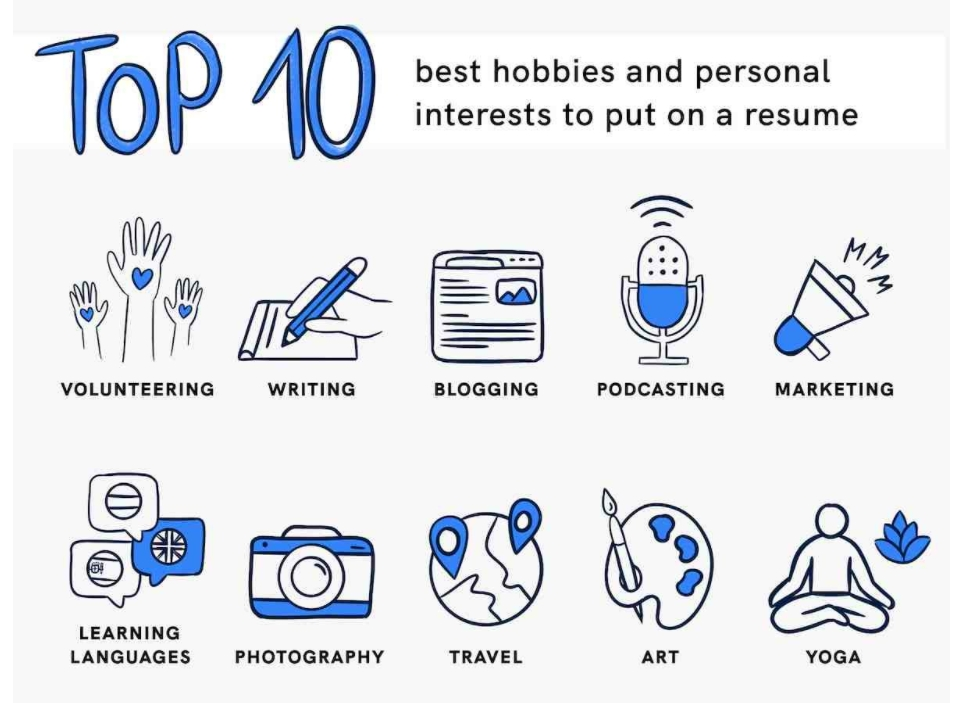

Including Your hobbies and interests
Your hobbies and interest are an entirely optional section and should only be added if they are somehow relevant to the jobs or companies you are applying to.
Generally speaking, they work best for candidates with no experience, to help demonstrate skills outside of the workplace.
Interests are optional and in many cases, they won’t make a huge difference – but if you feel that they could make you appear more suitable and benefit your application, then you should include them.
